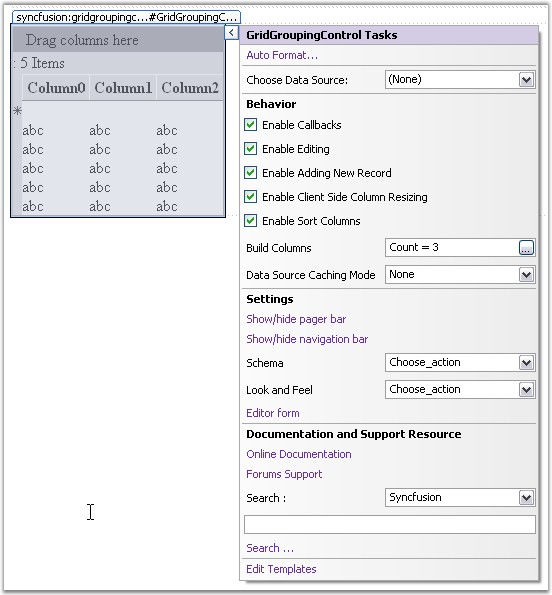
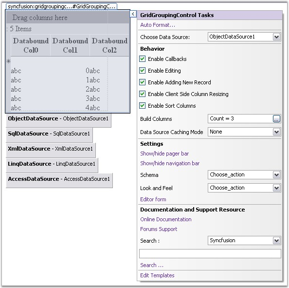
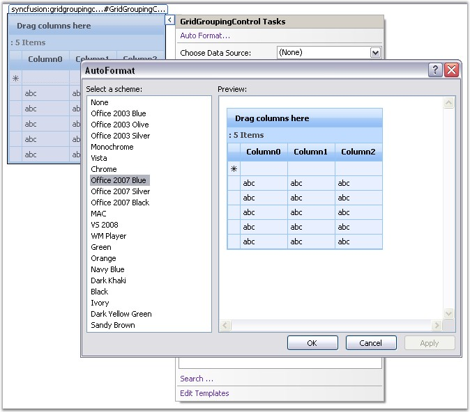
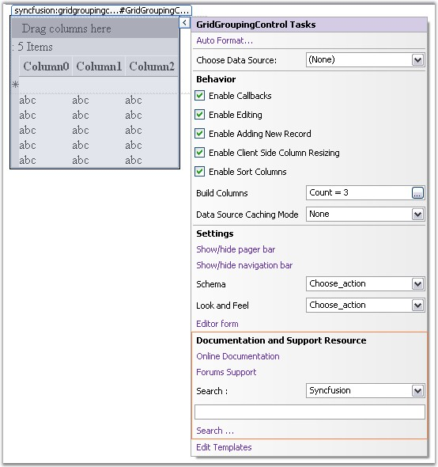
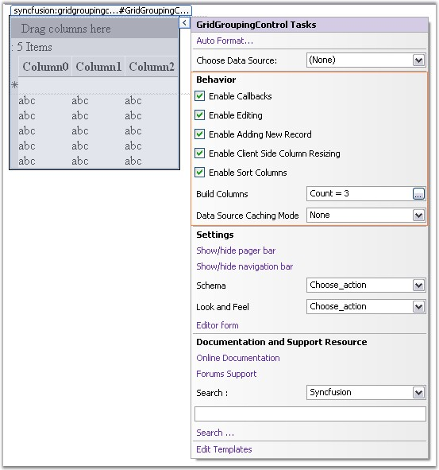
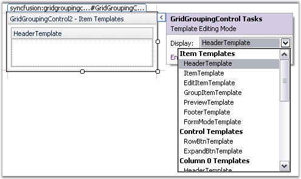

Smart Tags provide quick access to the most important properties in the grid during design time. It can be opened by clicking on the Arrow that is displayed at the top-right corner of the Grid Grouping control.

Figure 6: Smart Tag for Grid Grouping Control
You can quickly do the following using smart tags.
1. Declaratively bind the grid to the data sources at design time, through the smart tag. Grid will automatically update its schema and reflect the bound data source, which obviously can be customized.

Figure 7: Binding a data source to the Grid Grouping control by using the Smart Tag
2. Use the AutoFormat dialog to apply built-in styles to the grid.

Figure 8: Office 2007 Blue built-in style applied by using the Auto Format Dialog Box
3. Provide easy access to various online resources like Online Documentation, Evaluation Center and Forums Support.

Figure 9: Documentation and Support Resource in the Smart Tag
4. Set up the behavior of the grid such as Enable CallBacks, Allow Sorting, Add New Record, Allow Editing and Apply DataSourceCachingMode.

Figure 10: Grid Grouping Behavior customization support in the Smart Tag
5. Templates can be handled in the design view with the help of the EditItem Template in the context menu.

Figure 11: Templates selected by using the Smart Tag